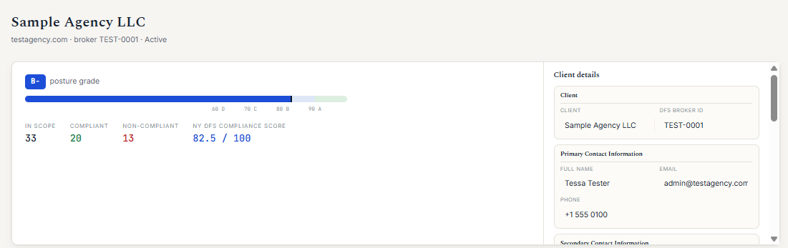
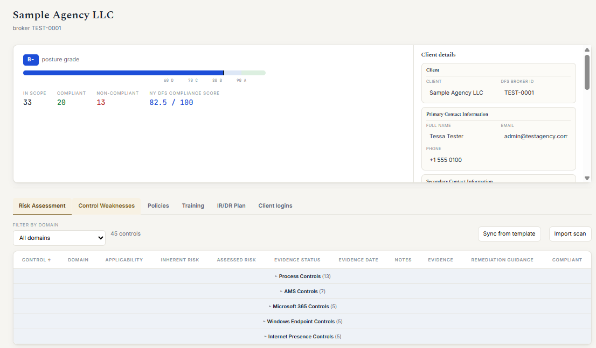
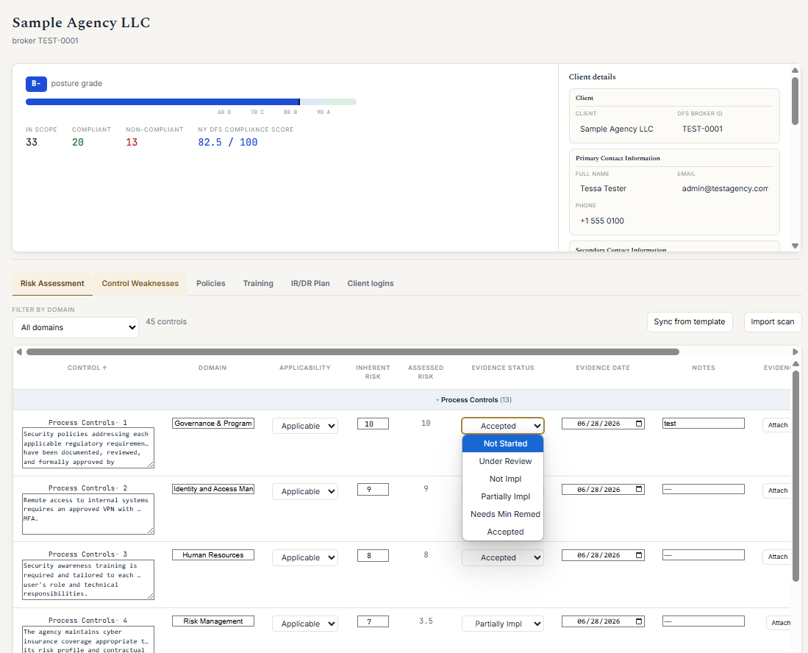
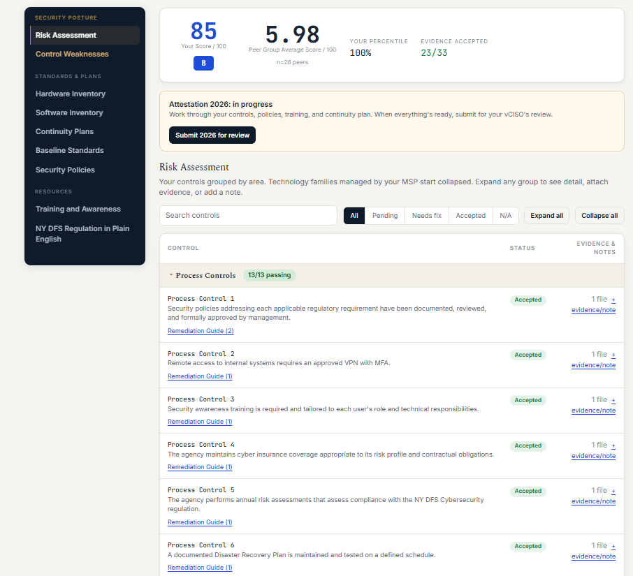
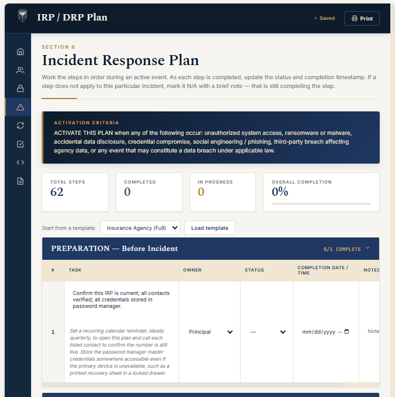

Pistos Compliance Sentinel
Pistos Compliance Sentinel is the platform behind every Aegis engagement: a living risk assessment, evidence vault, policy library, and incident response plan for your agency, mapped control by control to NY DFS 23 NYCRR 500. It is not another checkbox tool. It is how your vCISO runs your program, and how you see exactly where you stand.

Posture
Every client gets a posture grade and an NY DFS compliance score computed from the controls that actually apply to the agency. In scope, compliant, non-compliant, weighted by inherent risk. When an examiner or carrier asks where you are, the answer is on one screen: risk assessment, control weaknesses, policies, training, and the IR/DR plan, all behind one login.

Risk Assessment
Forty-five grouped controls across agency process, AMS, Microsoft 365, Windows endpoints, and internet presence. Evidence attaches to the control it proves, each determination carries a date and a status, and Skopein scanner results import directly, so technical findings update your assessment instead of dying in a PDF.

Client Portal
Your staff sees a clean portal with their score, their peer-group benchmark, and exactly what needs attention. Your MSP sees the technology controls they manage. Your vCISO sees everything. When the year's attestation is submitted, editing locks for review, creating a defensible record of who attested to what, and when.

IR / DR
A full Incident Response and Disaster Recovery plan lives inside the platform: activation criteria, phased steps with owners and time targets, progress tracking, and two sentences of practical implementation guidance under every task. When something breaks, the plan is a login away, not a binder no one can find.

Materiality First
A risk assessment that treats every control as equal buries the ones that matter. Sentinel weights each control by inherent risk and the data it protects, so your score reflects real exposure, not a checklist average. The controls that guard client data rank first, exactly as an examiner would rank them.
See where your agency stands against NY DFS 23 NYCRR 500. Request a walkthrough and we will show you the platform on a live sample agency.
Request a walkthrough